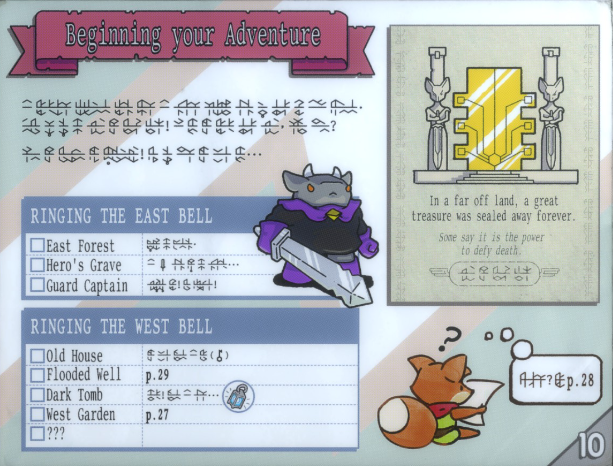

TUNIC ↗ is an isometric action game which also contains a good deal of puzzles. The world consists of several non-trivially interconnected locations. You progress through the game mainly by exploring, finding items, and beating bosses. While you are not given explicit directions it is usually quite clear what to do next. When some extra information is required (e.g. initially hidden control options) it is revealed through a booklet. You get pages of the booklet throughout the game and it feeds you the information in a vague manner. I found this feature to be surprisingly well done – finding the information you need in the booklet is nice, often leading to sudden moments of understanding.

The exploration always feeled meaningful as the game is filled with shortcuts and secrets. And if I got stuck it often helped to skim through the booklet and think about the overall picture of what is happening. Many puzzles can be solved by keen observation. For some you may have the solution before you know what exact tool will be necessary for solving them. Throughout the gameplay I found just two exceptions that seem to be insufficiently communicated: 1) At some point the bed becomes usable, 2) some walls can be blown up, and 3) some buttons do not show a control hint. There were vague hints for other things as well but these I found particularly baffling.
Not to end on a low note I need to say: the game is excellent. I expected to get a Metroidvania style action adventure and I got about 20 hours of intriguing story, unique mechanics, a few simple puzzles, and couple of hard puzzles.